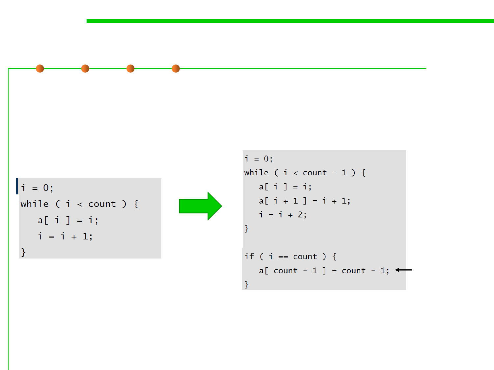

Unrolling-
展开
8.3 Code Tuning for Performance Optimization
▪
The goal of loop unrolling is to reduce the amount of loop
housekeeping.
Deal with the
case
that might fall
through the
cracks if the
loop went by
twos instead of
by ones.